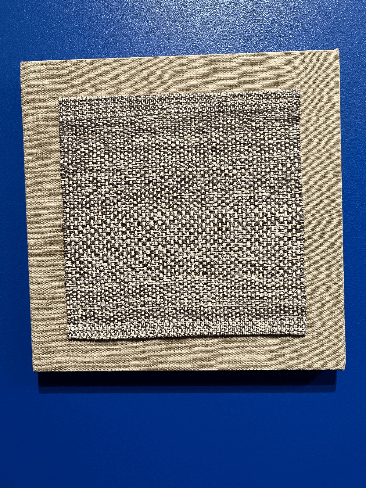
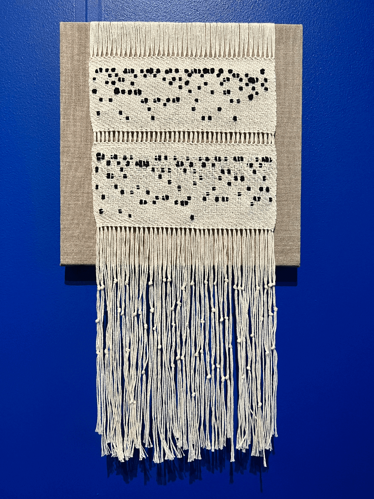
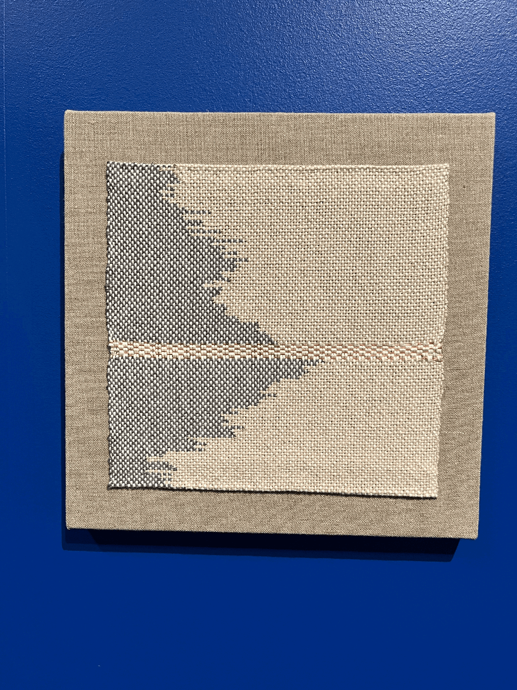
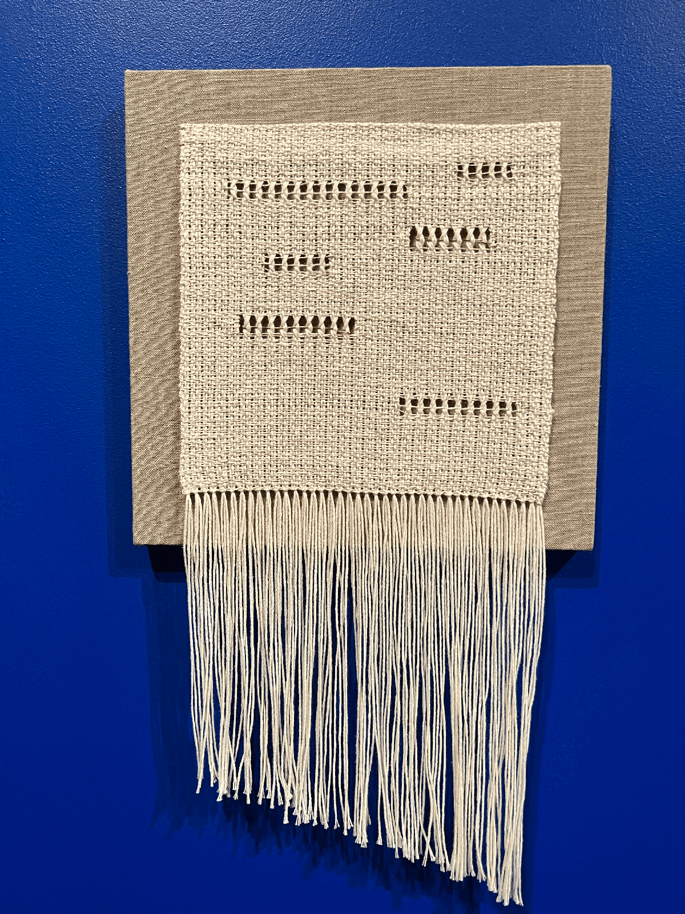

Ahree Lee
I was introduced to Ahree Lee's work today at The Jordan Schmitzer Museum of Art at PSU. I was lucky enough to get a tour by Theo and Nancy Downs-LeGuin, the curators.
Lee makes works in textiles, new media, and video. The works at the JSMA were weavings that resembled punchcards! Similar to the weavings I did in 2006. Theirs are really lovely and fine vs my thicker, cruder pieces. One piece de[picted the growth of women in CS degrees until 1984, then the collapse.
Of course I loved love love this person's work and hope I get to meet them someday. Remember that article I wrote on Medium?
- 
- 
- 
- 